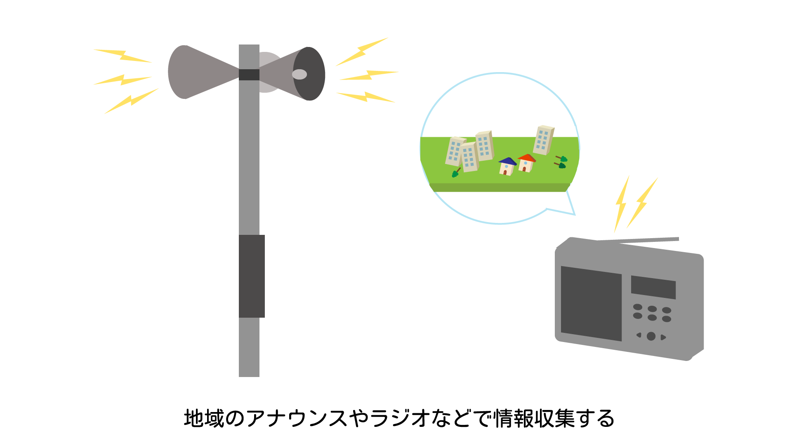

災害時に必要な情報

災害時には、正確な情報収集が必要となります。多くの人がインターネットを利用し、情報収集しようとするため、インターネットの災害時の情報収集は制限される可能性があります。インターネット以外の情報収集の手段としては地域のアナウンスやラジオなどがあります。
被害状況
周囲の建物や道路に関する損壊や火災が起こっていないかなど周囲の安全の有無を確認しましょう。
交通状況・ライフラインの情報
交通状況やライフラインを確認し、避難をした方がいいのか、自宅で待機するのが安全なのか自身で判断する必要があります。
気象情報
自然災害後、天候などにより二次災害が起きる可能性があります。起きる可能性があります。常に身の回りの危険について意識することが必要です。